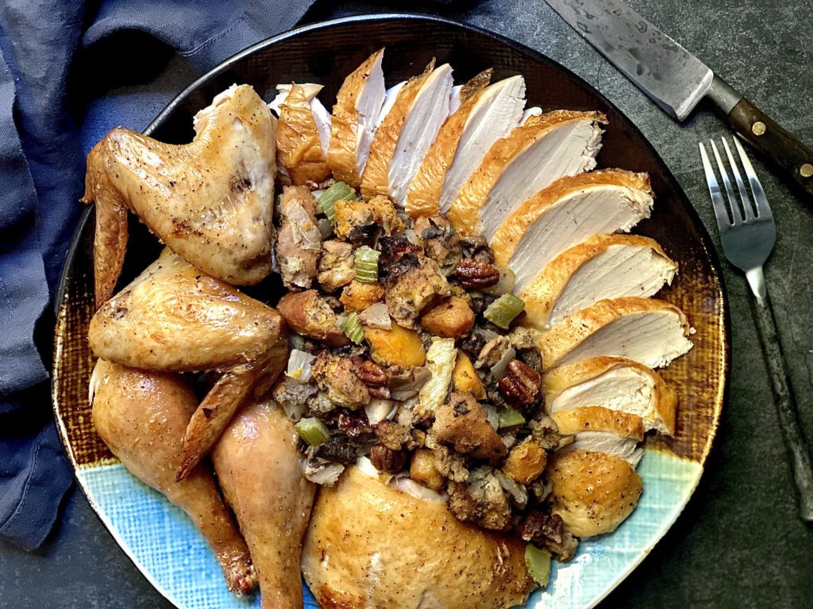

Turkey with Stuffing for Beginners (Very Easy!)

Stuffing a turkey isn't as hard as it seems — you just need a good recipe. That's where I come in! This turkey with stuffing recipe is perfect for beginners and old pros alike.
There are a few safety rules you must follow when you stuff a turkey: Stuff the turkey just before you roast it (not the night before), never put uncooked meat inside the uncooked bird, and always use a meat thermometer to ensure the center of the stuffing reaches at least 165 degrees F.
Ingredients:
- Turkey: This recipe was written for a 12-pound turkey. If your bird is larger or smaller, you'll need to adjust your cooking time.
- Stuffing mix: Packaged dry bread stuffing mix is usually located on the baking aisle or on the grain aisle at the grocery store. If it's not there, try the instant food section.
- Butter: Butter adds richness and flavor to the stuffing mix.
- Vegetables: You'll need diced onion and celery.
- Bread: Toast sliced white bread, then tear it into pieces.
- Seasonings: This easy turkey with stuffing is simply seasoned with salt and pepper.
- Oil: Rub the turkey with vegetable oil before roasting to add moisture, ensuring a juicy bird.
How to Make Turkey With Stuffing
Unsure how to stuff a turkey? You're in luck. You'll find the full, step-by-step recipe below – but here's a brief overview of what you can expect when you make this turkey with stuffing.
- Prepare turkey: Remove and discard the giblets. Pat the turkey dry with paper towels and place it in a roasting pan.
- Prepare stuffing: Bring the water and butter to a boil. Stir in the stuffing mix, cover, remove from heat, and let rest for 5 minutes. Meanwhile, cook the celery and onion in butter. Add the cooked veggies to the stuffing. Stir in bread pieces, salt, and pepper.
- Stuff turkey: Stuff the bread mixture into the body and neck cavities of the turkey. Rub the skin with vegetable oil.
- Prepare turkey: Remove and discard the giblets. Pat the turkey dry with paper towels and place it in a roasting pan.